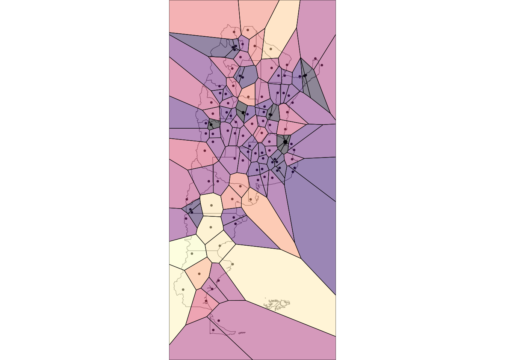
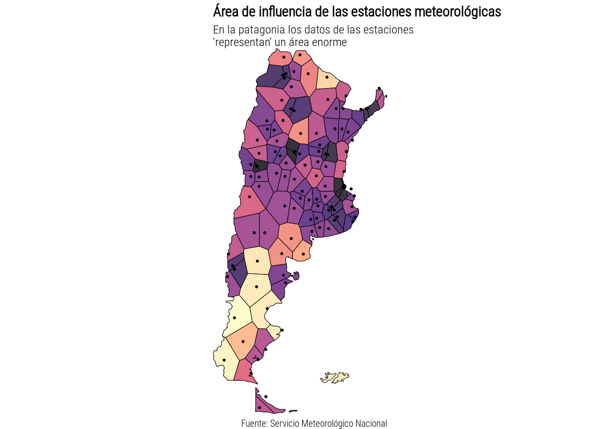

Nuevamente usamos la ubicación de las estaciones meteorológicas del Servicio Meteorológico Nacional disponibles en: www.smn.gob.ar/descarga-de-datos. Aprovechando lo que hice para el día 1 voy a intentar graficar el “área de influencia” de cada estación usando un diagrama de Vorionoi. El diagrama de Voronoi divide el plan en regiones de tal manera que cada punto en una región dada esté más cerca del punto central definido que de cualquier otro punto en el plano. En este caso los puntos centrales de cada región serán las estaciones meteorológicas.
estaciones <- fread("https://raw.githubusercontent.com/eliocamp/r-clima/fffb3fa596bc73afeeaa2a6296804da436e82fd3/datos/estaciones_smn.csv") %>%
.[provincia != "ANTARTIDA"] # Para hacer un mapa mas chiquito sin la Antartida
mapa <- rnaturalearth::ne_states(c("Argentina", "Falkland Islands"), returnclass = "sf")
dist <- geodist(estaciones[, c("lon", "lat")], measure = "geodesic")
colnames(dist) <- estaciones$numeroOACI
rownames(dist) <- estaciones$numeroOACI
dist <- reshape2::melt(dist, value.name = "distancia") %>%
setDT() %>%
setnames(c("Var1", "Var2"), c("numeroOACI", "vecina")) %>%
.[numeroOACI != vecina] %>%
.[, .SD[distancia == min(distancia)], by = .(numeroOACI)]
estaciones <- estaciones[dist, on = .NATURAL]Yo se que parece fácil, de hecho el gráfico de abajo lo conseguí en
los primeros 5 minutos aún contando el tiempo que me llevó instalar
ggvoronoi desde github luego de que tuviera que aprender a
instalar una vieja versión de rgeos que se archivo el mes
pasado en CRAN. Tiene pinta de ventana de iglesia!
library(ggvoronoi)
estaciones %>%
ggplot(aes(lon, lat)) +
geom_sf(data = mapa, inherit.aes = FALSE, fill = "grey98") +
geom_point(size = 0.5, alpha = 1) +
geom_voronoi(aes(fill = distancia), alpha = 0.5) +
stat_voronoi(geom = "path", linewidth = 0.2) +
scale_fill_viridis_c(option = "A", guide = NULL) +
coord_sf(expand = FALSE) +
theme_void()
La función geom_voronoi() tiene un argumento
outline que en teoría permite recortar el rectangulo a
partir de alguna forma. Por que no intentar que tenga la forma de
Argentina. Por supuesto que de la teoría a la practica hay un camino
largo y en este caso convertir el mapa sf a puntitos resultó ser no
trivial. Finalmente usé la clase sp y resultó. A esta altura las
provincias tampoco suman así que volaron
mapa_arg <- rnaturalearth::ne_countries(country = c("Argentina"), returnclass = "sf", scale = 50,)
argentina <- rnaturalearth::ne_countries(country = c("Argentina", "Falkland Islands"),
returnclass = "sp", scale = 50,)
estaciones %>%
ggplot(aes(lon, lat)) +
geom_sf(data = mapa_arg, inherit.aes = FALSE, fill = "grey98") +
geom_point(size = 0.5, alpha = 1) +
geom_voronoi(aes(fill = distancia/1000), alpha = 0.8, outline = argentina,
color = 1, linewidth = 0.2) +
geom_point(size = 0.5, alpha = 1) +
scale_fill_viridis_c(option = "A", guide = NULL) +
coord_sf(expand = FALSE) +
labs(x = NULL, y = NULL, fill = NULL,
title = "Área de influencia de las estaciones meteorológicas",
subtitle = "En la patagonia los datos de las estaciones\n'representan' un área enorme",
caption = "Fuente: Servicio Meteorológico Nacional") +
theme_void(base_size = 10,
base_family = "Roboto Condensed Light") +
theme(plot.title.position = "plot",
plot.title = element_text(face = "bold"))
# ggsave("day3.png", device = png, type = "cairo", bg = "white", width = 10, height = 18, units = "cm", dpi = 150)Pero además este gráfico me hizo notar que algunas estaciones estaban flotando en el Atlántico o del lado de Brasil. Y revisando los datos, resulta que hay un error a la hora de convertir las coordenadas originales en grados y minutos a grados decimales. Así que no confien en mis datos.